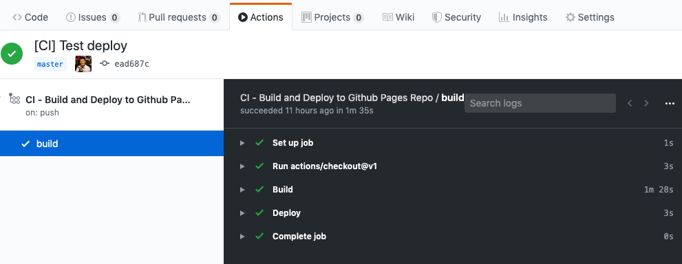

Deploy Gatsby on commit with Github Actions
The Dumb Way
For the longest time, ever since I first learned about Github Actions, I've wanted a quick easy way to automate deployment for this Gatsby blog.
The idea is simple yet beautiful.
- Edit Markdown
- Commit
- Magic
Gatsby build already deploys static files, so the only real challenge is pushing it to the github.io repo. Of course the lazy way is simply to git init in the directory, set origin and FORCE PUSH!!!!.
"deploy": "gatsby build && cd public && git add . && git commit -m 'deploy' && git push --force"
Obi wan has taught me well
The Fancy Way
The previous way works, but it's not very pretty. Kinda like hammering a nail with a big rock. Why are we building and pushing the artifacts locally when we have fancy Github Actions to do this for us?
Turns out setting up a github action is really simple. All you need is a YAML file.
.github/deploy.yml
name: CI - Build and Deploy to Github Pages Repo
on: [push]
jobs:
build:
runs-on: ubuntu-latest
steps:
- uses: actions/checkout@v1
- name: Build
run: |
npm install
npm run build
- name: Deploy
env:
ACCESS_TOKEN: ${{ secrets.ACCESS_TOKEN }}
run: |
cd ${{ github.workspace }}/public
git init
git add .
git config --local user.email "action@github.com"
git config --local user.name "GitHub Action"
git commit -m "Build artifacts"
git remote add origin https://$ACCESS_TOKEN@github.com/danielkhoo/danielkhoo.github.io.git
git push --set-upstream origin master --force
Note that I had to generate a separate ACCESS_TOKEN to access the other repo.
GitHub Settings / Developer settings / Personal access tokens
Once generated, add it as a secret in the current repo under Settings / Secrets
And that's it! Automatic Gatsby build and deploy on push. Magic
